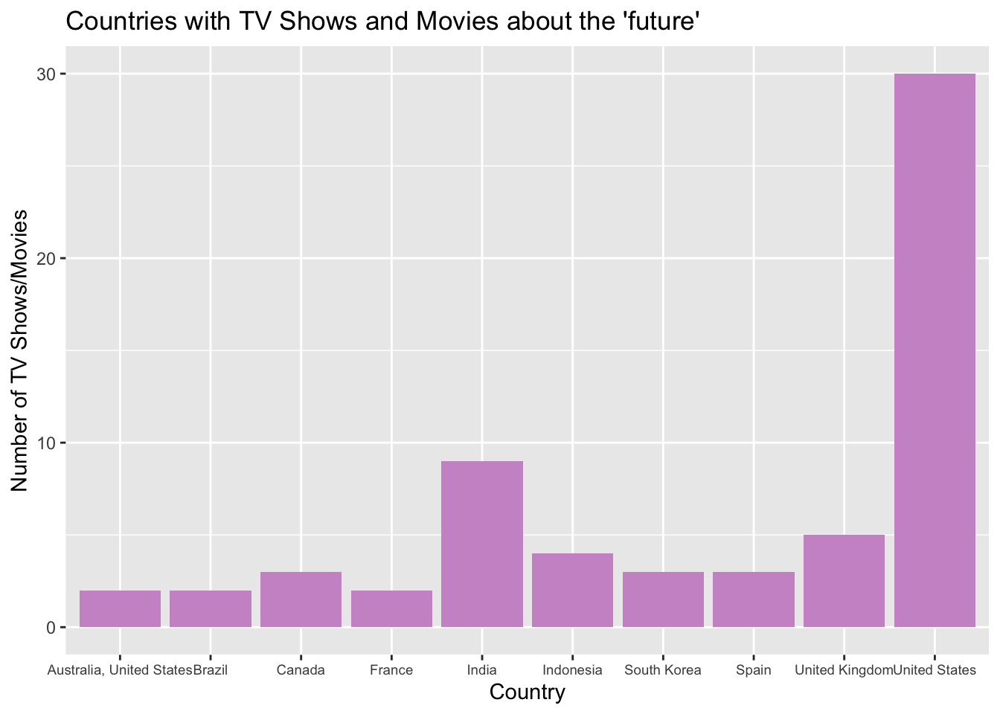

R Packages
library(tidyverse)
library(ggplot2)Full Text Analysis of Netflix Title Data
Connor Wang
March 2, 2025
Using the now discontinued third party Netflix search system, Flixable, Shivam Bansal (2021) compiled a dataset with information regarding media on the streaming platform. They posted it to Kaggle, the online platform for Data Scientists and Machine Learning purposes, likely with the hope of gaining interactions in the form of views, downloads, and engagement. The dataset was taken from Kaggle by Jon Harmon (2021) for the purpose of TidyTuesday. Netflix is a streaming service which includes various documentaries, TV shows, movies, and more. Through the information in the dataset I have created various questions of interest that come with accompanying visuals in order to share my findings.
# A tibble: 6 × 12
show_id type title director cast country date_added release_year rating
<chr> <chr> <chr> <chr> <chr> <chr> <chr> <dbl> <chr>
1 s1 TV Show 3% <NA> João… Brazil August 14… 2020 TV-MA
2 s2 Movie 7:19 Jorge Mich… Demi… Mexico December … 2016 TV-MA
3 s3 Movie 23:59 Gilbert Ch… Tedd… Singap… December … 2011 R
4 s4 Movie 9 Shane Acker Elij… United… November … 2009 PG-13
5 s5 Movie 21 Robert Luk… Jim … United… January 1… 2008 PG-13
6 s6 TV Show 46 Serdar Akar Erda… Turkey July 1, 2… 2016 TV-MA
# ℹ 3 more variables: duration <chr>, listed_in <chr>, description <chr>The table represents a tibble of the first several rows of the dataset. The data includes 12 columns, with information on the type of media, the title, director, cast, country, date added, year released, rating, duration, and genre it is listed in. Each row is a title on Netflix.
The first question of interest that I came up with for this dataset is how has movie duration changed over time? Since the data about what is streaming on Netflix included the duration of movies in minutes as well as the year they were released, I decided it would be interesting to note how this has changed over time. Going into it I assumed that movies have gotten longer over time. Movies that come out these days seem to always be two plus hours, often being two and a half hours or even three on some of the extreme cases. Although not all movies are included on Netflix, it would still give a good idea of how movies have trended in terms of duration over time. In order to ensure a more accurate relationship, I removed all movies that did not have a runtime of over a hour. I figured that anything less meant it was a short film or some sort of documentary that would not accurately represent the runtimes of movies. Based on the scatterplot I created below there is not a clear trend in movie duration over time. Instead we see when the movie industry took off and there was a higher amount of movies being made , which occurred starting at the 2000s.
movies_only <- netflix_titles %>%
filter(type == "Movie") %>% #movies only
mutate(movie_duration = as.numeric(str_extract(duration, "\\d+"))) %>% # only the numbers from the duration (says min originally)
filter(!is.na(duration) & movie_duration >= 60) # only movies 60 mins or longer
ggplot(movies_only, aes(x = release_year, y = movie_duration)) + #data from filtered dataset
geom_point(color = "lightsalmon3") + #scatterplot
labs( #graph labels
title = "Has Movie duration changed over time?",
x = "Year Released",
y = "Duration of Movie in Minutes(starting at 60)"
)Previously mentioned in the description of the question of interest, this plot depicts the release year of a movie on the x-axis versus the duration of the movie in minutes on the y-axis. This creates a comparison between movie duration over time. We do not see any clear trends in terms of how movie duration has changed over time, leading us to believe that it has not. As movies progressed they maintained a similar blueprint as the original ones, keeping similar runtimes that they believed was sufficient to tell the story that they were attempting to give their viewers. They did not see a point in making the movies extremely shorter or longer as time went on.
The second question of interest that I came up with was which countries have the most TV Shows and Movies that are about the future. I wondered if there would be a connection to depictions of the future with countries that tend to be seen as more technologically advanced or first world. I explored the descriptions that included the word future in them and used this to determine if the picture had anything to do with the future. What I found generally aligned with what I thought as the United States had the highest amount of TV shows and movies dealing with ‘future’ ideas. This is also likely why I thought about this because I am exposed to so many shows and movies that align with this, having grown up watching Netflix in the states. The bar chart shows a large discrepancy from the United States to the next country, India. This uses only the top 10 countries that have future in descriptions.
content_about_future <- netflix_titles %>%
filter(str_detect(description, "(?i)future")) %>% # look for the word future in descriptions
filter(!is.na(country)) %>% # remove titles where country is NA
group_by(country) %>%
summarise(count = sum(n())) %>% # group by country and count the number of times it appears
arrange(desc(count)) %>%
slice_head(n = 10) # only show the top 10 countries
ggplot(content_about_future, aes(x = country, y = count)) + # data from filtered dataset
geom_col(fill = "plum3") +
labs( # labels for data
title = "Countries with TV Shows and Movies about the 'future'",
x = "Country",
y = "Number of TV Shows/Movies"
) +
theme(axis.text.x = element_text(size = 7)) # stop text from overlapping
Previously mentioned in the description of the question of interest, this plot shows the top 10 countries that have TV Shows or Movies on Netflix with future in their description. The y-axis shows how many TV Shows or Movies follow this criteria. Outside of the United States, there are not very many TV Shows or Movies that are about future scenarios. The US is the clear leader by about 20 projects. The next is India with about 8 or 9. Most have below 5.
The third question of interest that I came up with was which words come before the word ‘of’ the most in movie/show titles. I thought about this because there seem to be many shows and movies that use of, such as Pirates of the Caribbean, Wizard of Oz, and many more. I found this would be an interesting thing to see. I did not have much prediction going in, but after seeing the data it makes sense. Words such as story and legend tend to come before of. Many title creators likely see it as a good way of making a fantastical-sounding title, such as the story of ___ or the legend of ___. I used the title column in the data to create a lookaround that checked for ’ of’ following the word. This is how I got the 10 most used words before ‘of’, finding an interesting trend that I do not think many people would tend to think of.
words <- netflix_titles %>%
mutate(of = str_extract(str_to_lower(title), "\\b\\w+(?= of)")) %>% # extract the word that comes right before 'of'
filter(!is.na(of)) %>%
group_by(of) %>% # group by non-NA words before 'of'
summarise(n = n()) %>% # count the number of times this word appears before 'of'
arrange(desc(n)) %>%
slice_head(n = 10) # take only the top 10 words
ggplot(words, aes(x = of, y = n)) + # data from filtered dataset
geom_col(aes(fill = of)) + #create barplot with different colors for each word
labs( # graph labels
title = "10 Most common words that come before 'of' in TV show/movie titles",
x = "Word before 'of'",
y = "Number of titles that it appears before 'of' in"
)Previously mentioned in the question of interest, this plot shows the top 10 words that come before ‘of’ in the titles of TV shows or movies. The words legend and story are both tied for first place the most amount of times it comes before the word ‘of’ in a title. The 7 other words also appear in front of ‘of’ a considerable amount of times, all of which having at least 6 projects in which they are used in the title prior to the use of ‘of’. The different words are labeled by both the x-axis and the legend. Each color corresponds to a different word that precedes ‘of’.
Bansal, Shivam. “Netflix Movies and TV Shows.” Kaggle, 2021, https://www.kaggle.com/datasets/shivamb/netflix-shows. Accessed 7 May 2025.
“Flixable.” Flixable, https://flixable.com/. Accessed 7 May 2025.
Harmon, Jon. “Netflix Shows.” Github, 2021, https://github.com/rfordatascience/tidytuesday/blob/main/data/2021/2021-04-20/readme.md.